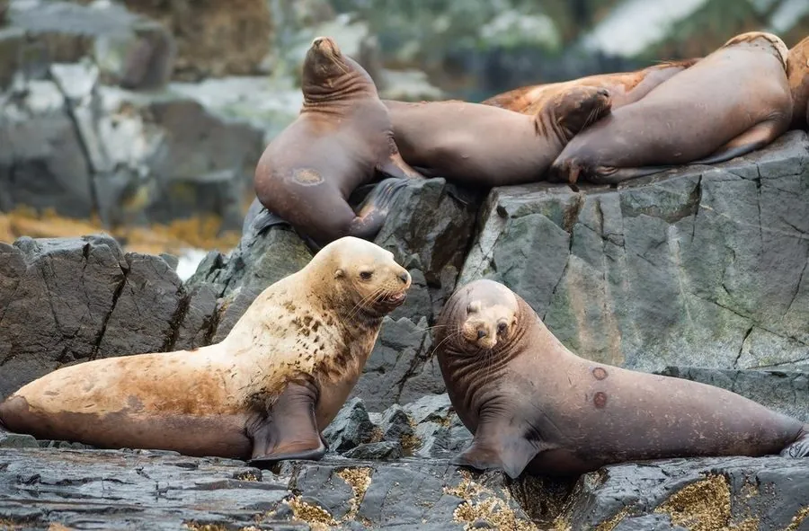

哺乳动物 · 动物界
北海狮 Eumetopias jubatus

北太平洋的大型海狮，雄兽颈部有厚实的鬃毛、体重可超 1 吨，叫声低沉如狮吼，因西部种群锐减被列为近危。
- 分类
- 门脊索动物门纲哺乳纲目食肉目科海狮科属北海狮属
- 栖息环境
- 北太平洋的岩石海岸、海岛与近岸海域
- 地理分布
- 日本、俄罗斯远东、美国阿拉斯加到加利福尼亚的北太平洋沿岸
- 保护级别
- IUCN 近危（NT）；非中国分布物种
物种志
北海狮是体型最大的海狮之一，雄兽体长 2.8–3.3 米、体重 700–1100 kg，雌兽体长 2.3–2.9 米、体重 240–350 kg。雄兽颈部有厚实的鬃毛，胸部宽阔，全身呈浅黄褐色至红棕色；幼兽毛色较深。
北海狮分布于北太平洋沿岸，从日本、俄罗斯远东到美国阿拉斯加和加利福尼亚，主要在岩石海岸和海岛繁殖。它以鱼类、乌贼和章鱼为食，常在近岸水域捕食，也会长距离觅食。繁殖季雄兽建立领地并聚集雌兽，雌性妊娠期约 11.5 个月，每胎 1 仔。由于过度捕猎和渔业竞争，西部种群数量大幅下降，已被列为濒危，全球整体为近危。
形态与习性
- 食性鱼类、乌贼与章鱼
- 体长雄 2.8–3.3 m，雌 2.3–2.9 m
- 体重雄 700–1100 kg，雌 240–350 kg
- 寿命约 20–30 年
- 繁殖妊娠约 11.5 个月，每胎 1 仔
- 特征雄兽颈部有厚实鬃毛
趣味知识
- 北海狮是体型最大的海狮之一，雄兽体重可超过 1 吨。
- 雄兽颈部有厚实的鬃毛，叫声低沉，因此得名海狮。
- 北海狮西部种群数量锐减，被单独列为濒危。
生态关系
- 捕食 ← 大白鲨 大白鲨捕食海狮